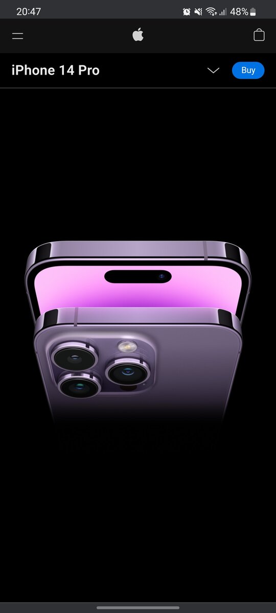
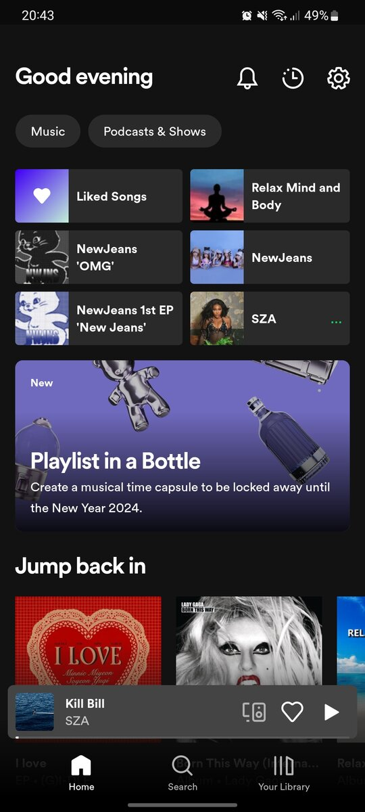

The white space here was the perfect touch apple could use in its website. Giving a clean visual and focusing on the product. Grabbing buyers attention to their brand new Iphone. /p>
White Space
apple.com

Repetition
spotify.com

Spotify use the principle of Repetition to their home page. Little squares imitating a album cover making easier to users to choose what they want to listen.
Contrast
Material UI
Material UI used the principle of contrast with the different but slightly similar font and the contrast using color.